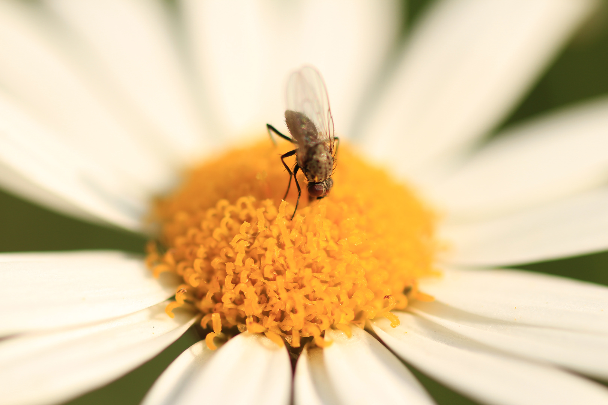

Ich bin Artikel 1.
Weit hinten, hinter den Wortbergen, fern der Länder Vokalien und Konsonantien leben die Blindtexte.
Weit hinten, hinter den Wortbergen, fern der Länder Vokalien und Konsonantien leben die Blindtexte.
Abgeschieden wohnen sie in Buchstabhausen an der Küste des Semantik, eines großen Sprachozeans.
